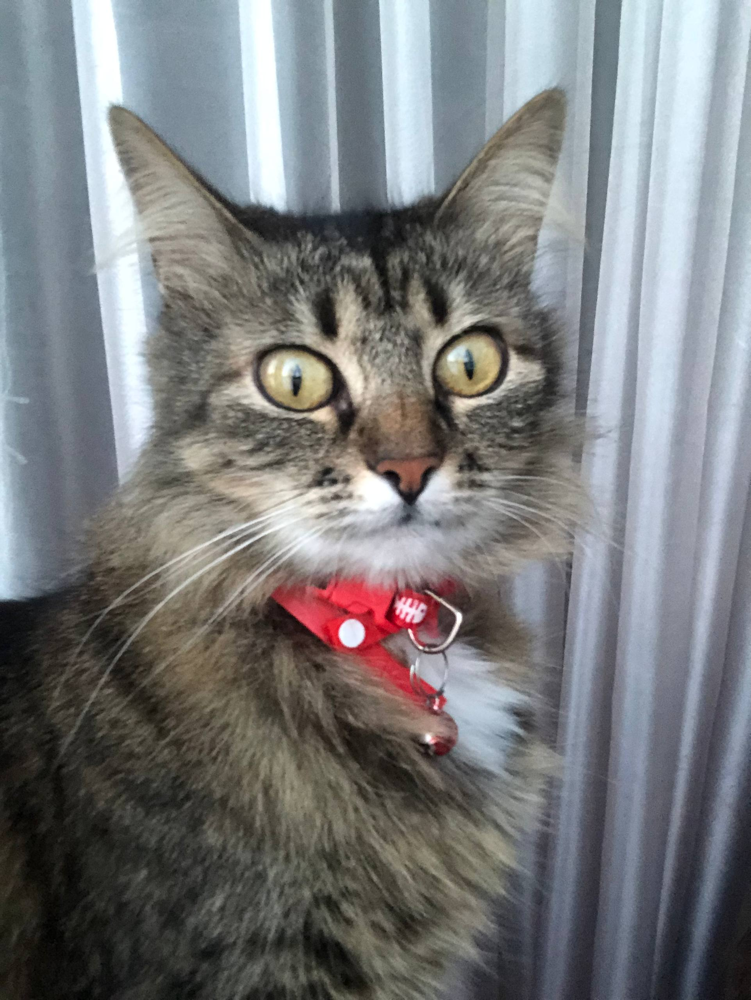
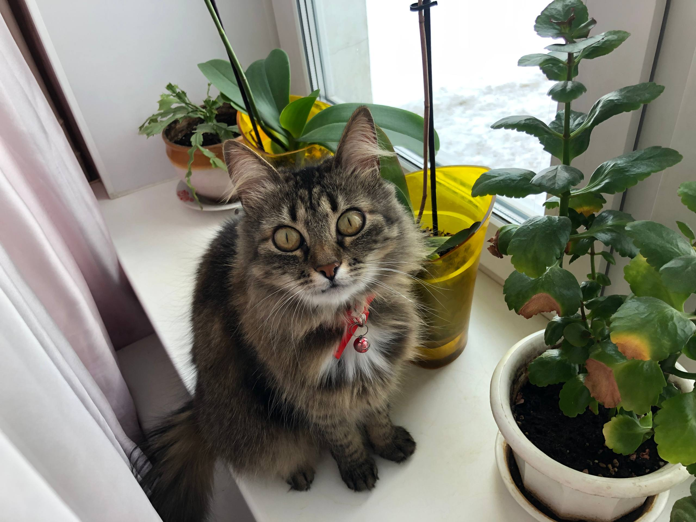
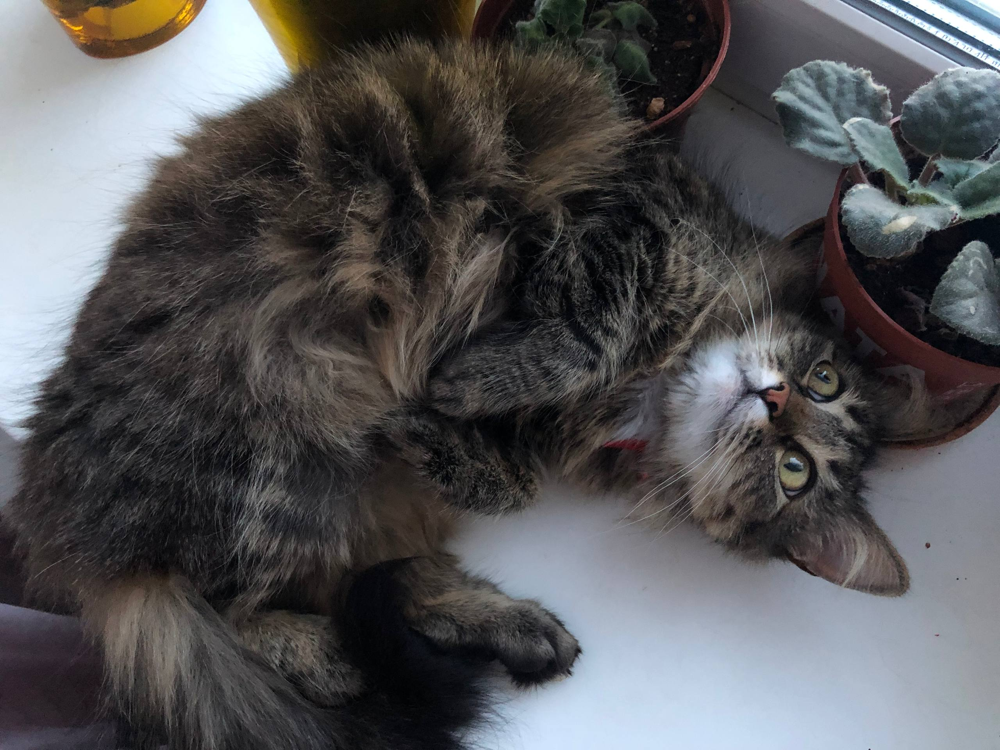

Причины почему они могут себе это позволить:
- Мягкая шёрстка
- Люди - пешки
- Они милашки


Котёнок возится с клубком:
То подползет к нему тайком,
То на клубок начнет кидаться,
Толкнет его, отпрыгнет вбок...
Hикак не может догадаться,
Что здесь не мышка, а клубок.



